Backyard and Outdoor Living Pavilions in Charleston, SC
Pergola or pavilion?
Pergola
$10,000 – $30,000
Traditionally open, with a flat, slatted or gently sloped roof. We also build them closed in, with a solid roof, finished ceiling, electrical and post and beam trim — and it is still a pergola. The least expensive of the two, which is why most clients choose one.
Pavilion
$30,000 – $90,000+
Can have a flat or shed roof too, but the options expand to gable, hip and other pitched forms. Open-sided or partially enclosed, and generally larger — which is what gives you room for a kitchen, a bathroom, storage and the rest.
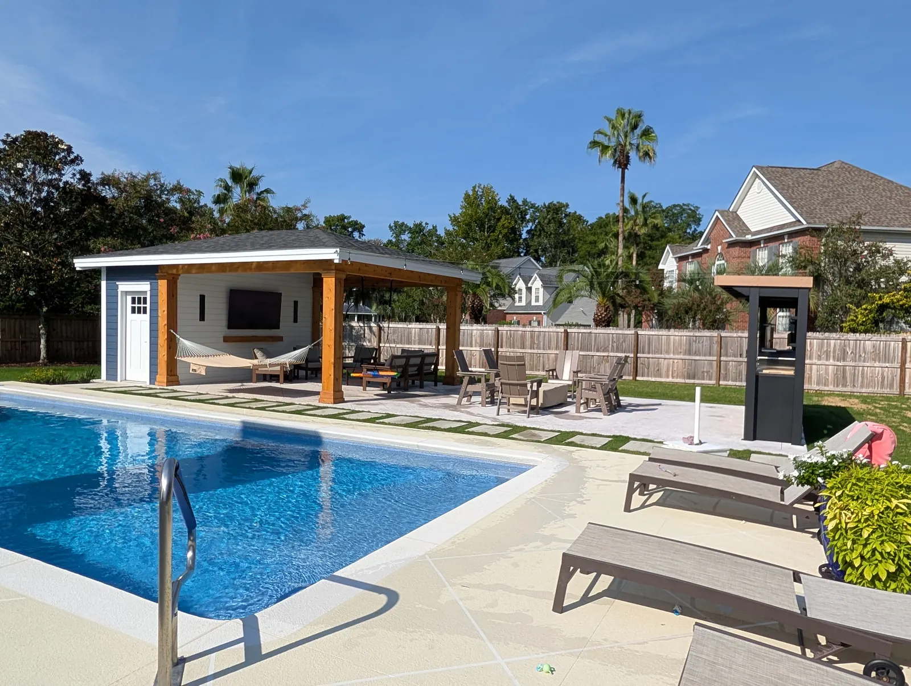
Designed & Built In-House Pavilions Are the Bigger Build
A pavilion can have a flat or shed roof like a pergola, but its options expand to gable, hip and other pitched forms. It can be open-sided or partially enclosed, and it’s generally the larger of the two — which is what gives you the height and the framing for the amenities that turn a covered patio into a proper outdoor room: a kitchen, a bathroom, storage, speakers, lighting.
That scale is also the cost. A pergola can be built with a solid roof and a finished ceiling too, and most of our clients go that way because it costs less. A pavilion is for when the space needs to do more.
Doug and Zach Cramer do the site visits and the design themselves, and one of them is on the job every day until it’s finished. Gas, electrical and plumbing are handled by our own team, along with the permits.
What $30,000 Buys, and What $80,000 Buys
At $30,000 a pavilion is small and bare bones — the structure, and not much beyond it.
At $80,000 and up you get something like our West Ashley cabana: full trim detailing, speakers, accent lighting, a storage and bathroom area at the back, and the size to match.
| Pavilion | $30,000 – $90,000+ |
|---|---|
| Pergola | $10,000 – $30,000 |
The patio underneath matters more than people expect. Salt-void concrete kept the cost down at West Ashley; the Mount Pleasant pavilion sits on travertine. Beyond that there’s rarely one big driver — on a complex build with a bathroom and a sauna it’s the number of separate steps and trades that adds up. You’ll get an exact quote once the design is set.
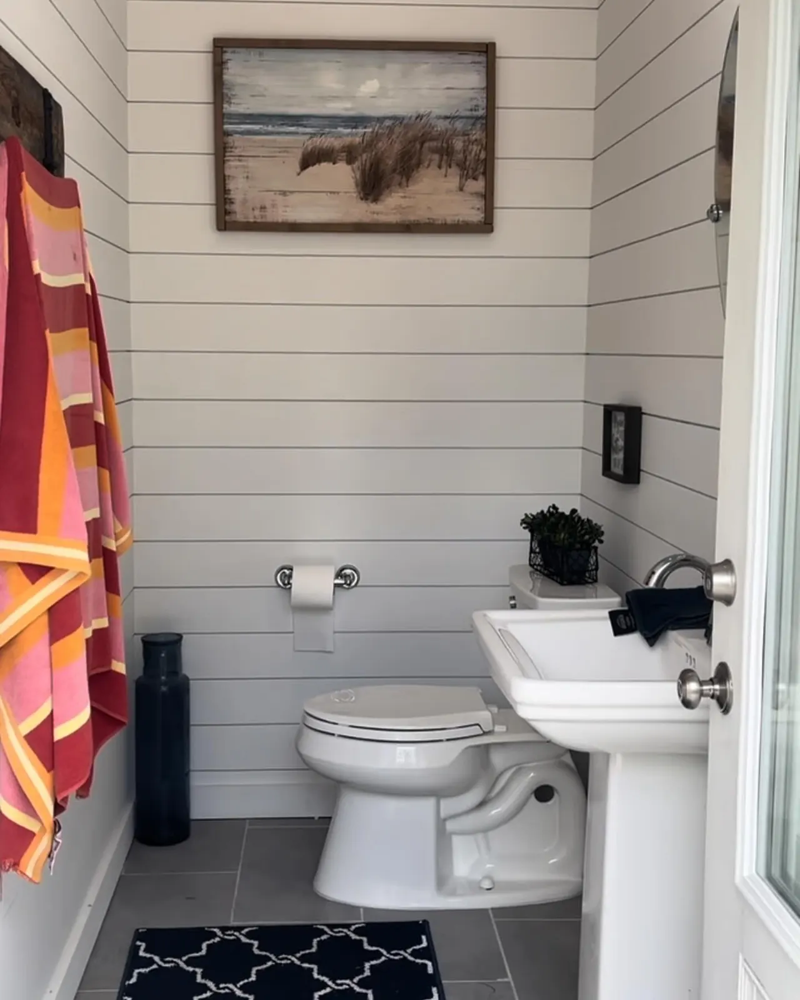
Pavilions The Back of the Building Is Where the Value Hides
The single most popular thing we add to a pavilion is a storage and bathroom area at the back. It’s in both the West Ashley cabana and the Mount Pleasant pavilion, and it’s the feature people are most glad they paid for once the space is in use.
It’s also the reason a pavilion is worth planning properly. A bathroom means plumbing, which means the layout, the utilities and the finish grade all have to be settled before anything is framed.
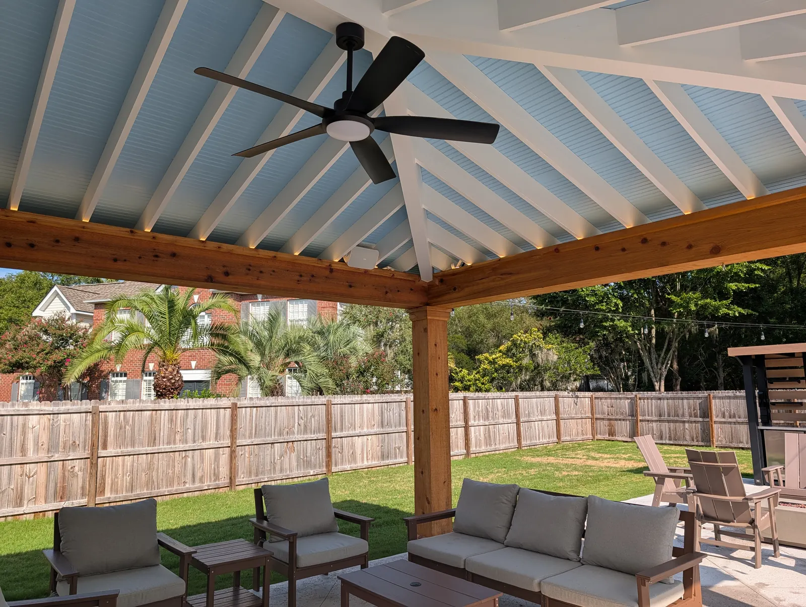
Materials Where to Spend
Material choice comes down to architectural style and budget. We frame in pressure-treated lumber, and the finish trim can be a range of lumber or Hardie board — cedar is a good option and holds up well here.
For ceilings we like individual tongue-and-groove boards. If the budget is tight, T1-11 or beadboard plywood does the same job for less, and it’s the easiest place to save without touching the structure — the West Ashley ceiling above is plywood, and it was one of the places those owners chose to save.
Every pavilion is built for hurricanes and the coastal climate. The frame is tied together with hurricane strapping, or structural screws rated to carry the same loads.
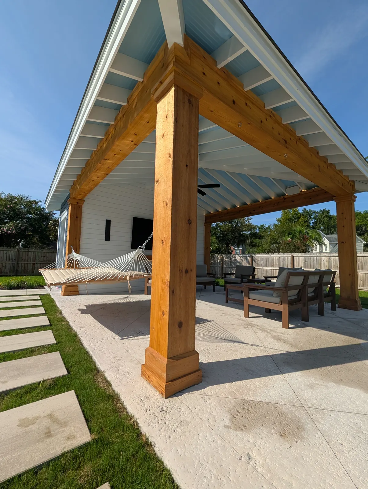
West Ashley Pool Cabana Where the Work Shows Up in the Trim
The showpiece of this build is the trim. The cedar posts and beams are mitered tight, then sealed with a color-matched Big Stretch caulk so the seams stay hidden as the wood moves over the years.
We trimmed out the ridge and hip rafters larger than they needed to be, which frames the whole structure far better than standard sizing would. Then the details that finish it: the lighting, the speakers, and the trim capping the beams where the rafters pass through.
The owners wanted the natural cedar look, so rather than paint we used a stain with a little pigment matched to the cedar — it holds the color and still protects the wood from graying.
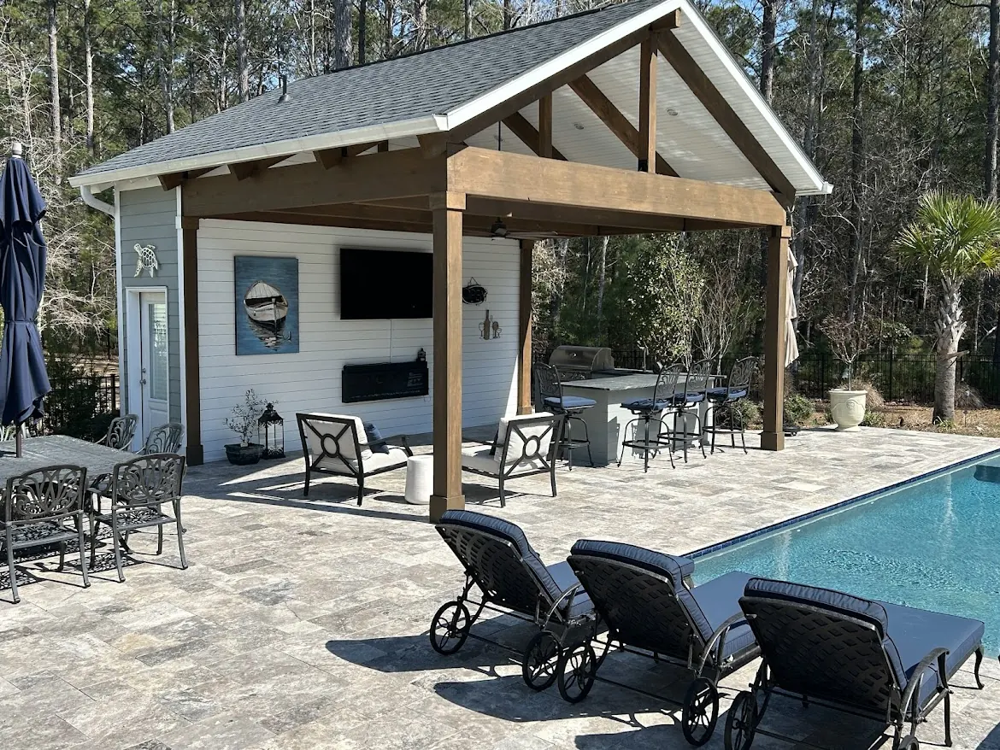
Mount Pleasant Pool Pavilion Built More Like a Timber Frame
This build had everything, but what set it apart was the scale and the beams. The beams alone — huge engineered timbers, the kind that make a ceiling feel grand — were $10,000 in material cost and weighed a serious amount — closer to a timber-framed structure than a traditional pavilion.
It carries a kitchen, a shiplap bathroom and open rafter framing, and it sits on a travertine pool deck rather than concrete.
Keeping the Finish
- Stain — reapply 8 to 12 months after the first coat, then every few years as needed.
- Paint — every 5 to 10 years, depending on the product and how exposed it is.
- Posts and fascia take direct sun and rain, so they need attention sooner than a covered ceiling does.
We also offer linseed oil paint for exterior wood — natural, long lasting and easy to maintain, though it costs more to install. If you want the wood left natural, a clear sealer protects it but won’t stop it going gray.
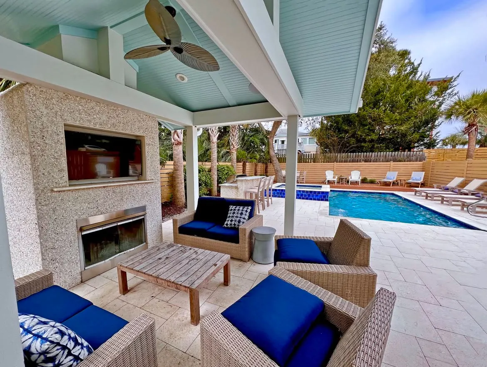
The Details That Matter Later
On a structure this size these are cheap to get right at the design stage and expensive to fix afterwards:
- Where it sits. Position and layout relative to the yard, where the sun actually falls, and how you’ll use it.
- What comes next. If you’re staging the work over a few years, we plan now for the kitchen that arrives later.
- Proportion. We use the classical orders to proportion the structure, so it looks right rather than just big enough.
- Hidden utilities. Where the electrical, plumbing and everything else runs, worked out before anything is framed.
- Finish grade. Knowing the final ground level before the posts go in.
- Every amenity on the list. Speakers, lighting, a bathroom, a sauna — all of it decided up front.
We’d rather stage a project over a few years than rush it and build something you won’t love.
How We Build Yours
- Consultation at your home. We talk about how you’ll use the space and what budget you’re comfortable with. It’s free around Charleston, Mount Pleasant and Summerville. For Kiawah, Seabrook, Wadmalaw and Awendaw, or anywhere else more than an hour from Charleston or Summerville, there’s a charge for the proposal trip. It comes off the price if you go ahead with the build, and it is not refundable if you do not.
- Budget and design. Drawings, with optional 3D renderings at an additional cost. We match the pavilion to your home’s architecture.
- Permits. Almost every structure needs one, so allow about 4 to 6 weeks. A few towns exempt smaller structures under a certain square footage — Isle of Palms is one. We handle the paperwork.
- Start date. Structures usually begin within 1 to 2 months of signing, depending on how busy we are and whether permitting or HOA approval is still running.
- Build. A pavilion takes 6 to 8 weeks. Gas, electrical and plumbing are all done by our own team.
Pavilions pair naturally with outdoor kitchens, pool decks, paver patios and landscape lighting.
Projects We’ve Built
Real jobs, with the story of how each one came together.


Frequently Asked Questions
How much does a pavilion cost?
Between $30,000 and $90,000 and up. At $30,000 a pavilion is small and bare bones. At $80,000 and up you get something like our West Ashley cabana: full trim detailing, speakers, accent lighting, a storage and bathroom area at the back, and the size to match. The patio underneath affects the total too, since salt-void concrete costs less than travertine.
What is the difference between a pergola and a pavilion?
A pergola is traditionally an open structure with a flat, slatted or gently sloped roof. A pavilion can have a flat or shed roof as well, but its options expand to gable, hip and other pitched forms, it can be open-sided or partially enclosed, and it is generally larger. A gazebo sits closer to a pergola in scale, a smaller garden structure, but with more decorative forms such as a domed roof. Most of our clients choose a pergola because it costs less.
Can you put a bathroom in a pavilion?
Yes, and it is the most popular thing we add. A storage and bathroom area at the back features in both the West Ashley cabana and the Mount Pleasant pavilion. It does mean the plumbing, layout and finish grade all have to be settled before anything is framed, so it is worth deciding early.
How long does a pavilion take to build?
Six to eight weeks to build, with about four to six weeks for permitting before that. Structures usually start within one to two months of signing, depending on how busy we are and whether permitting or HOA approval is still running.
Do I need a permit for a pavilion?
Almost always, yes. Nearly every structure needs a permit, though a few towns exempt smaller structures under a certain square footage, such as Isle of Palms. We handle the permitting as part of the build.
What are pavilions built from?
The structure is framed mainly in pressure-treated lumber, with finish trim in a range of lumber or Hardie board. Cedar is a good option here. For ceilings we like individual tongue-and-groove boards; T1-11 or beadboard plywood is the budget alternative and the easiest place to save without touching the structure.
Where can I save money on a pavilion?
The ceiling and the patio are the two easiest places. T1-11 or beadboard plywood instead of individual tongue-and-groove boards saves on the ceiling — the West Ashley cabana ceiling is plywood, and it was one of the places those owners chose to save. Salt-void concrete costs less than travertine underneath. Neither changes the structure itself.
Will a pavilion stand up to a hurricane?
Our structures are built for hurricanes and the coastal climate. The frame is tied together with hurricane strapping, or structural screws rated to carry the same loads. Keeping the paint or stain up to date is the other half of protecting it out here.
Showcasing our Recent Works
Explore a selection of our recent pavilion and outdoor structure projects.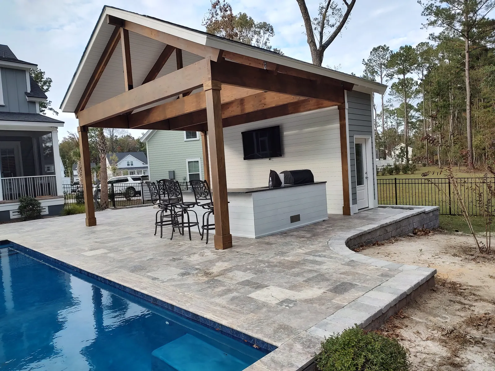
1 / 6 2 / 6
2 / 6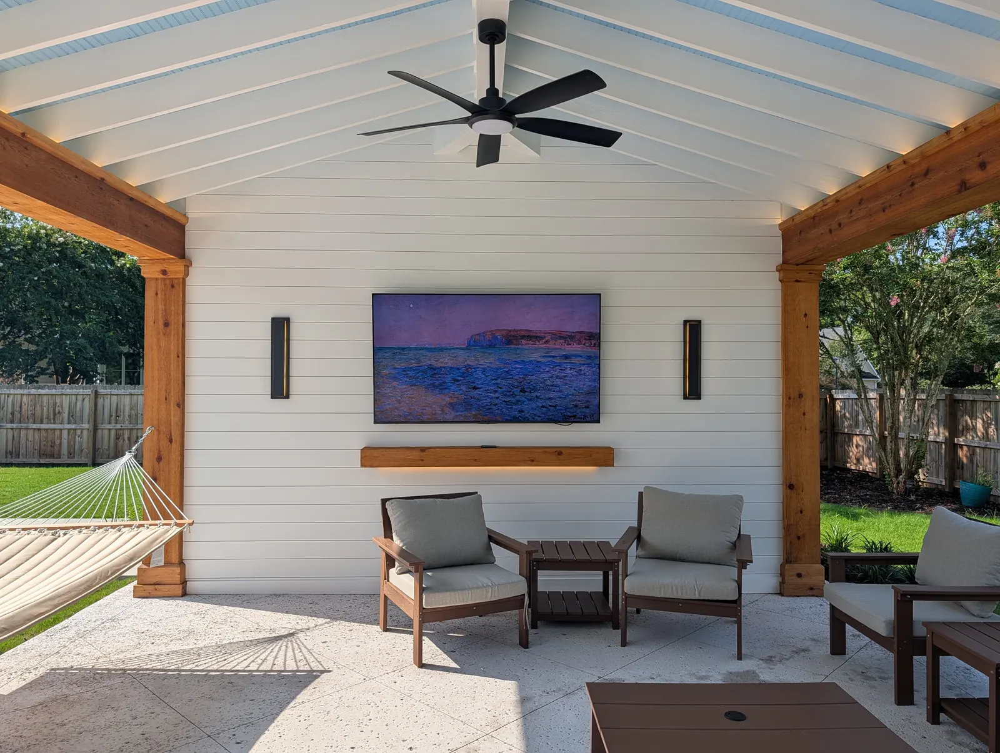
3 / 6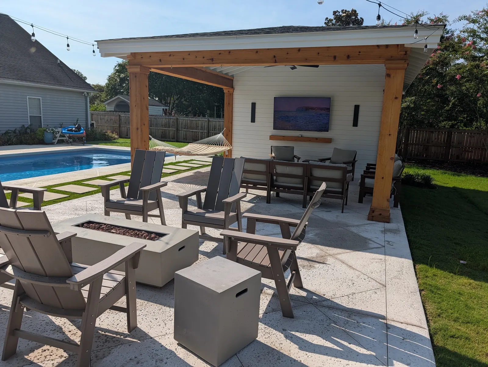
4 / 6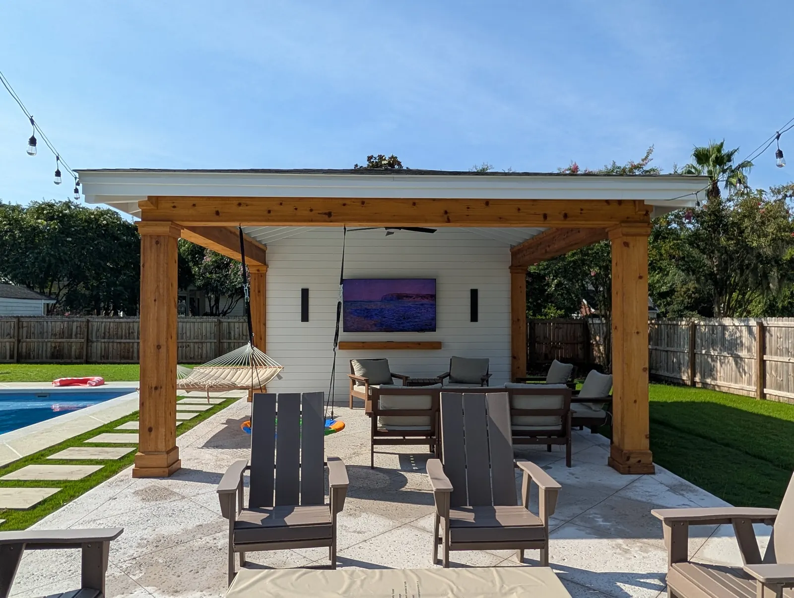
5 / 6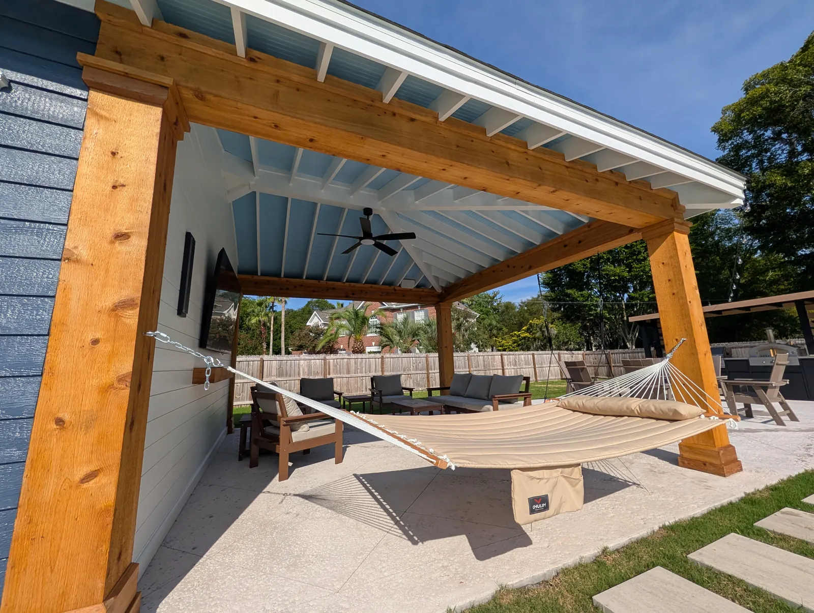
6 / 6Areas We Serve
Cramers Landscaping provides its services throughout:
Get in Touch
Ready to Transform Your Landscape?
If you’re searching for a landscaping company in Charleston that delivers expertise, reliability, and long-term value, Cramers Landscaping is here to help. We offer free consultations and custom project quotes tailored to your needs.
Based In
9153 Markleys Grove Blvd, Summerville, SC
We come to you. There is no office or showroom to visit.
Phone
Hours
Monday – Friday: 8:00 AM – 5:00 PM
Saturday: 9:00 AM – 2:00 PM
Sunday: Closed
This site is protected by reCAPTCHA. Google’s Privacy Policy and Terms of Service apply.